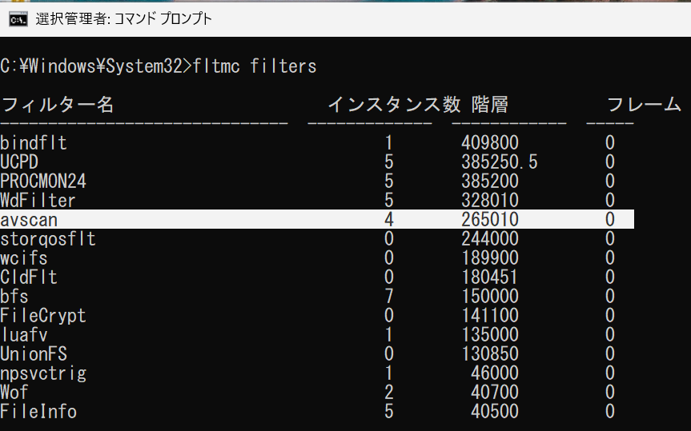
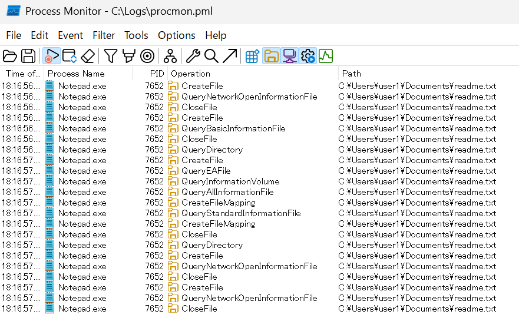
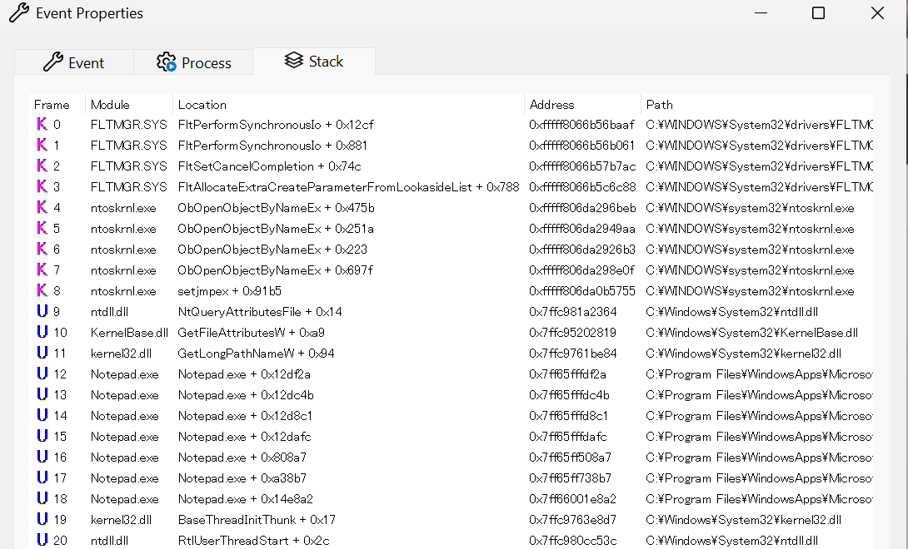
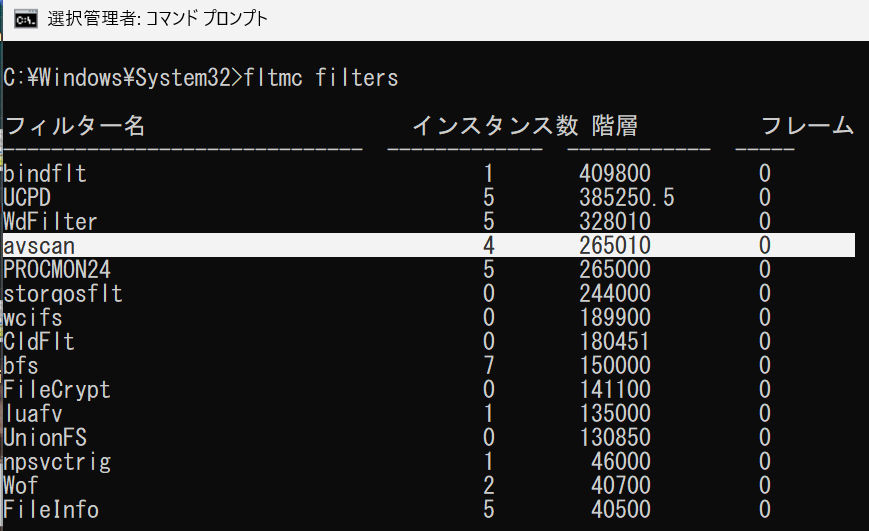
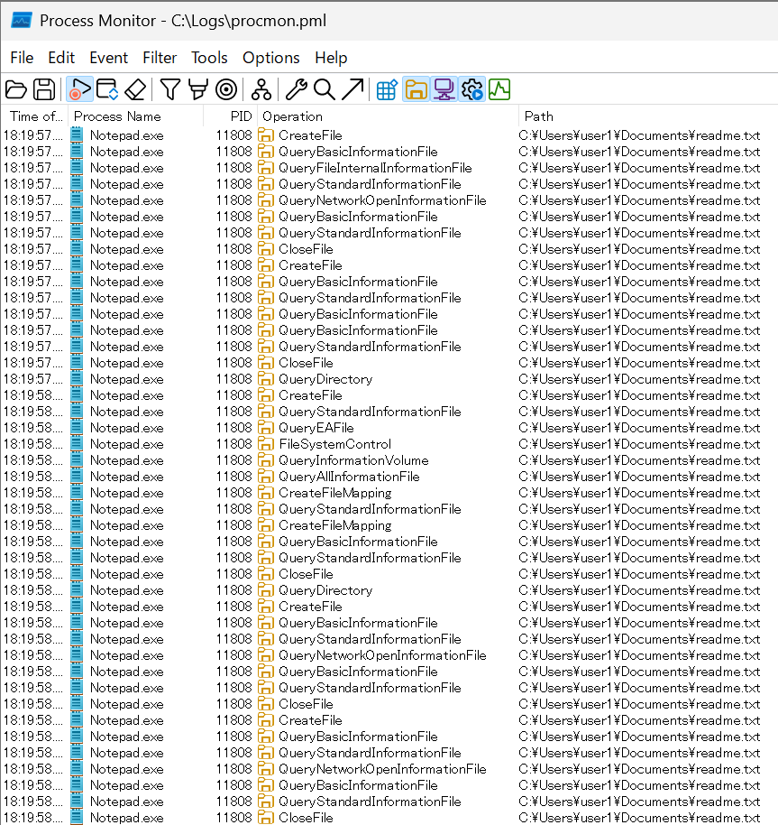
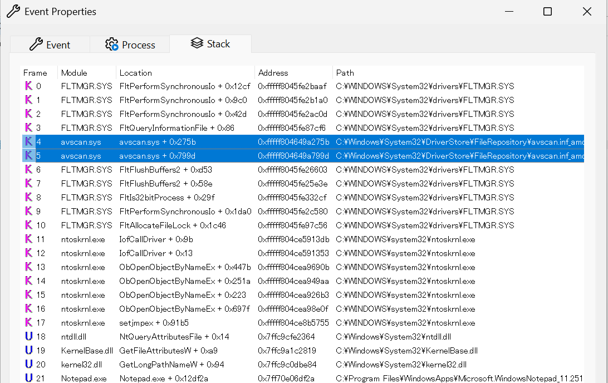

こんにちは、Japan Developer Support Core チームの松井です。Process Monitor は、システム上で動作するプロセスのファイルやレジストリへのアクセス、プロセスやスレッドの起動や終了などのアクティビティを記録・解析できる強力なツールです。しかし、低い高度 (Altitude) で動作するファイル システム フィルター ドライバーのアクティビティについては Process Monitor の既定の設定ではキャプチャできない場合があります。今回は、そのようなアクティビティをキャプチャするために Process Monitor の Altitude を変更する手順を紹介します。基本的な使い方は過去の記事を参考にしてください。
背景
Altitude は、I/O スタック内でのファイル システム フィルター ドライバーの "優先順位" や "位置づけ (上下関係)" を数値で表したものです。Windows では、複数のフィルター ドライバーが同時にロードされても問題が起きないよう、各フィルター ドライバーがどの順番で I/O を受け取り、どの順番で I/O 完了通知を処理するかを Altitude により定義しています。
Process Monitor のフィルター ドライバー (Procmon24.sys) は、既定で Altitude 385200 に設定されています。既定の値でもファイル操作に関する問題を調査する上で十分な情報が得られることが多いのですが、一部のドライバーはさらに低い Altitude が割り当てられているため、そのようなドライバーが処理するアクティビティは Process Monitor の既定の Altitude ではキャプチャできません。
割り当て済みの Altitude の一覧は、Microsoft ドキュメントの 割り当てられたフィルター高度 に掲載されています。例えば Process Monitor の既定の Altitude 385200 はアクティビティ モニターのグループに属していますが、ウイルス対策ソフトウェアやバックアップ ソリューションなどの製品はより低い Altitude が割り当てられていることが分かります。このような製品のアクティビティを調査するためには、Process Monitor の Altitude を変更して情報採取を行う必要があります。
Altitude を変更して Process Monitor を実行する手順
Process Monitor の Altitude はレジストリから変更することも可能ですが、操作が少々複雑になるため、ここでは Process Monitor のコマンドライン オプション /Altitude <値> を使用して Altitude を変更する手順を紹介します。レジストリから変更する方法については、弊社のブログ記事をご参照ください。
管理者としてコマンド プロンプトを起動し、
fltmc filtersコマンドを実行して読み込まれているフィルター ドライバーの一覧を表示します。実行コマンド
1
fltmc filters
出力例
1
2
3
4
5
6
7
8
9
10
11
12
13
14
15
16
17フィルター名 インスタンス数 階層 フレーム
------------------------------ ------------- ------------ -----
bindflt 1 409800 0
UCPD 5 385250.5 0
PROCMON24 5 385200 0
WdFilter 5 328010 0
avscan 4 265010 0
storqosflt 0 244000 0
wcifs 0 189900 0
CldFlt 0 180451 0
bfs 7 150000 0
FileCrypt 0 141100 0
luafv 1 135000 0
UnionFS 0 130850 0
npsvctrig 1 46000 0
Wof 2 40700 0
FileInfo 5 40500 0読み込まれているフィルター ドライバーに
PROCMON24のフィルター名が含まれている場合は、コンピューターを再起動します。再起動後に再度コマンドを実行し、PROCMON24が表示されないことを確認してください。管理者としてコマンド プロンプトを起動し、
/Altitude <値>オプションを指定して Process Monitor を起動します。<値>には、キャプチャしたいフィルター ドライバーの Altitude よりも低い値を指定してください。例えば、ウイルス対策ソフトウェアの Altitude が 265010 の場合、以下のように 265000 を指定します。1
C:\debuggers\procmon.exe /Altitude 2650000
再度
fltmc filtersコマンドを実行し、指定した Altitude でPROCMON24が読み込まれていることを確認します。出力例
1
2
3
4
5
6
7
8
9
10
11
12
13
14
15
16
17フィルター名 インスタンス数 階層 フレーム
------------------------------ ------------- ------------ -----
bindflt 1 409800 0
UCPD 5 385250.5 0
WdFilter 5 328010 0
avscan 4 265010 0
PROCMON24 5 265000 0
storqosflt 0 244000 0
wcifs 0 189900 0
CldFlt 0 180451 0
bfs 7 150000 0
FileCrypt 0 141100 0
luafv 1 135000 0
UnionFS 0 130850 0
npsvctrig 1 46000 0
Wof 2 40700 0
FileInfo 5 40500 0Process Monitor のウィンドウが表示されたら、通常の手順で問題の再現とログの保存を行ってください。
コマンドラインで情報採取手順を行う例
Process Monitor を操作して正しく情報採取を行う際は、フィルターの状態やログの保存先などに注意が必要です。手順の誤りを防ぐためにコマンドラインで情報採取を行う例を以下に記載します。
事前にライセンス条項をご確認ください。
管理者としてコマンド プロンプトを起動します。
fltmc filtersコマンドを実行して読み込まれているフィルター ドライバーの一覧を表示します。PROCMON24 が表示されている場合はコンピューターを再起動し、再度コマンドを実行して PROCMON24 が表示されないことを確認します。以下のコマンドを実行して Process Monitor を指定した Altitude で起動します。ここでは割り当て済みの Altitude より低い 40000 を指定します。
/BackingFileオプションにはログの保存先ファイル名を指定します。1
C:\debuggers\procmon.exe /Altitude 40000 /BackingFile C:\Logs\procmon.pml /AcceptEula /Quiet /NoFilter
もう一度
fltmc filtersコマンドを実行し、指定した Altitude でPROCMON24が読み込まれていることを確認します。問題を再現させます。
以下のコマンドを実行して Process Monitor による情報採取を停止します。
1
C:\debuggers\procmon.exe /terminate
Altitude の変更前後の見え方の比較
Altitude の変更の必要性を理解するために、既定の Altitude で情報採取を行った場合と、Altitude を変更して情報採取を行った場合のログの見え方を比較してみましょう。今回は、ファイル システム フィルター ドライバーのサンプルに含まれる AvScan フィルター ドライバー を使用しています。このフィルター ドライバーの Altitude は inf ファイルで Altitude 265010 に設定されており、Process Monitor の既定の Altitude 385200 よりも低くなっています。
AvScan フィルター ドライバーをビルドしてインストールし、システムに読み込ませた状態で、以下の 2 通りの方法で Process Monitor による情報採取を行い比較してみます。
既定の Altitude (385200) で情報採取を行った場合
既定の Altitude で Process Monitor を起動します。その後 fltmc filters コマンドで PROCMON24 が読み込まれている Altitude を確認すると 385200 となっており、AvScan フィルター ドライバーの Altitude 265010 よりも高いことが分かります。

メモ帳を起動してテキスト ファイルを開いてみます。
 いくつかのファイル アクティビティが記録されますので、そのうちの QueryBasicINformation の操作のイベントについてプロパティを開き、コールスタックを確認してみると、AvScan フィルター ドライバー (avscan.sys) がコールスタックに含まれていないことが分かります。

他のアクティビティを同様に確認しても AvScan フィルター ドライバーがコールスタックに含まれているイベントは見つからず、AvScan フィルター ドライバーがファイル操作に関与した様子を Process Monitor でキャプチャできていないことが分かります。
Altitude (265000) を変更して情報採取を行った場合
/Altitude 265000 で Process Monitor を起動します。その後 fltmc filters コマンドで PROCMON24 が読み込まれている Altitude を確認すると 265000 となっており、AvScan フィルター ドライバーの Altitude 265010 よりも低いことが分かります。

メモ帳を起動してテキスト ファイルを開いてみます。既定の Altitude の場合と比べるとより多くのファイル アクティビティが記録されていることが分かります。
 そのうちの QueryBasicINformation の操作のイベントについてプロパティを開き、コールスタックを確認してみると、Altitude を変更したことで AvScan フィルター ドライバー (avscan.sys) がコールスタックに含まれていることが分かります。

AvScan フィルター ドライバーがコールスタックに含まれているイベントを確認でき、Altitude を変更することで AvScan フィルター ドライバーが関与したファイル操作のアクティビティを Process Monitor でキャプチャできていることが分かります。
まとめ
Process Monitor の Altitude を変更することで、既定の Altitude ではキャプチャできなかったフィルター ドライバーが関与するアクティビティを記録できるようになります。アプリケーションやシステムの問題を調査する際に、特定のフィルター ドライバーが関与するアクティビティをキャプチャしたい場合は、今回紹介した手順で Altitude を変更して情報採取を行ってみてください。読み込まれているフィルター ドライバーとその Altitude は fltmc filters コマンドで確認できます。特に、正常に動作している環境と比べて問題が起きている環境では異なるフィルター ドライバーが読み込まれている場合、そのフィルター ドライバーの Altitude を考慮して Process Monitor の Altitude を変更することを検討してください。
本ブログの内容は弊社の公式見解として保証されるものではなく、開発・運用時の参考情報としてご活用いただくことを目的としています。もし公式な見解が必要な場合は、弊社ドキュメント (https://learn.microsoft.com や https://support.microsoft.com) をご参照いただくか、もしくは私共サポートまでお問い合わせください。